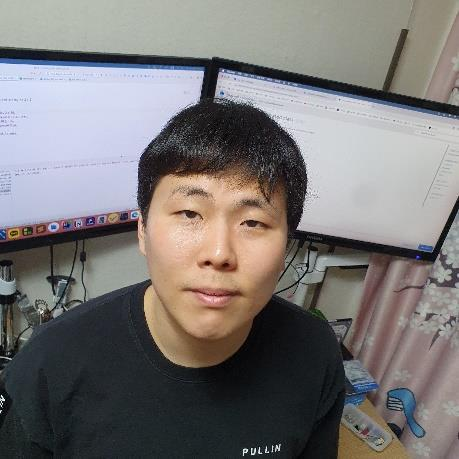

김현준
Java · Spring 백엔드 개발자
비즈니스를 이해하고, 소통을 설계와 구현으로 연결하는 개발자입니다. 기획자·업무 담당자와 요구의 배경을 짚고, 복잡한 업무 흐름을 코드와 데이터 구조로 풀어냅니다. Java·Spring을 중심으로 서비스 재구축과 데이터 이관, 반복 업무 자동화를 맡아왔습니다. 함께 방향을 찾고 끝까지 구현해, 믿고 일을 맡길 수 있는 개발자를 지향합니다.

센드페이
2023.05 – 현재 | 백엔드 개발 · 폐쇄망 서비스 개발 및 유지보수 전담
월 20만~30만 건을 처리하는 발행·결제 서비스입니다. 그중 10만~20만 건이 월초에 집중됩니다.
DB 프로시저의 거래 로직을 Java로 이관
거래가 지연돼도 복잡한 프로시저 호출 관계와 부족한 로그 때문에 원인을 찾기 어려웠습니다. Java 이관을 개선 과제로 제안하고 경영진과 작업 시간을 협의했습니다. 일상 유지보수를 병행하며 현재 업무에 필요한 로직을 선별해 옮기고, 이전 게임 서비스의 불필요한 검증을 제거했습니다. 정산 데이터로 결과를 대조했으며, 일부 지연을 해소하고 로그를 통한 원인 분석이 가능해졌습니다.
공급사 실패·무응답 시 요청별 대체 발행
기존 대체 발행은 운영자가 직접 실행·종료해야 했고, 실행 후 발행 경로가 원래대로 복원되지 않았습니다. 이를 요청별 판단으로 바꾸어 원공급사에 먼저 요청하고, 실패 응답이나 업체별 제한 시간 초과가 발생한 건만 대체 발행하도록 했습니다. 다음 요청은 자동으로 원공급사에서 시작해 수동 복원 절차를 없앴습니다.
한빛글로벌
2019.07 – 2021.01 | 개발 팀장 · 풀스택 개발
조합원 결제 서비스 재구축 및 운영 도구 개발
동료와 역할을 나누어 기본 서비스를 재구축하고, Docker 서버 구축·DB 설계·회원 및 거래 데이터 이관을 담당했습니다. 이관 후에도 기존 회원의 거래와 잔액을 이어갈 수 있도록 거래 건수·회원별 잔액·비밀번호 해시를 각각 대조했습니다.
재구축 후에는 기본 서비스를 함께 유지보수하고, 조합원 관리·포인트 지급 서비스는 Spring Boot로 직접 개발했습니다. 회사의 지급 지침을 구현하면서 담당자의 검토와 자동 처리를 분리했습니다. 관리자는 산출 내역을 확인하고, 이후 회원별 지급은 서비스가 처리합니다.
경력과 개발 경험
주요 기술
Java · Spring Boot · SQL 센드페이에서는 MyBatis XML 동적 SQL과 Spring Security를 주로 사용합니다. Netty를 다뤘고, 운영 서비스 중 하나에서 Oracle·jQuery를 사용합니다. 한빛글로벌에서는 JPA·QueryDSL을 사용했습니다.
주요 경력 및 개발 활동
| 기간 | 소속 · 역할 |
|---|---|
| 2023.05 – 현재 | 센드페이 · 백엔드 |
| 2021.11 – 2023.05 | 개인 프로젝트 · 앱·서버 개발 |
| 2021.04 – 2021.10 | 퍼니줌 · 풀스택 |
| 2019.07 – 2021.01 | 한빛글로벌 · 개발 팀장 |
| 2018.12 – 2019.07 | 베네피트HQ · 풀스택 |
| 2018.02 – 2018.10 | 숨페이 → 숨텍 · Android |
| 2016.12 – 2018.01 | 팀노바 · 개발 교육 |
| 2014.10 – 2016.12 | 블루문소프트 · 기술지원 |
앱 및 서버 개발
숨페이·숨텍 블록체인 코어와 통신하는 Android 지갑과 Python 연동 서버를 개발해 네이티브 지갑 앱을 출시했습니다.
개인 프로젝트 지역 정보를 나누는 Flutter 앱과 Spring Boot 서버를 설계했습니다. 지도에서 채팅방을 찾아 참여하는 기능을 구현했고, 전체 사용자와 방 참여자에게 보내는 알림을 구분했습니다.
개인 개발에서의 AI 활용
요구사항과 검증 기준을 먼저 정리하고, Codex가 작성한 문서에서 빠진 조건과 오류를 검토합니다. 합의된 문서를 기준으로 구현·테스트를 진행하며, 결과가 기대와 다르면 명세와 코드 중 원인을 구분해 수정합니다. Flutter 배경음 변경에서는 회귀 테스트와 macOS 실행 결과를 함께 확인했습니다. 반복 오류는 AGENTS.md에 기록해 다음 작업에 반영합니다. 개발 기록
학력 · 자격
학점은행제 컴퓨터공학 학사 · 정보처리기사
센드페이
거래 처리와 외부 공급사 연동
2023.05 – 현재 | 폐쇄망 서비스 개발·운영 전담
현재 MyBatis XML로 동적 SQL을 작성하며, Spring Security를 주력으로 사용합니다.
거래 처리의 Java 이관 범위
게임 포인트 시스템에서 출발한 코드에 현재 거래와 무관한 이용자 검증이 남아 있었습니다. 프로시저 호출을 그대로 옮기면 불필요한 작업과 복잡한 의존 관계까지 새 코드에 남게 됩니다. 기존 유지보수 일정 안에서 경영진과 이관 시간을 협의하고, 현재 거래에 필요한 로직을 선별해 옮겼습니다.
업무 결과를 유지하면서 장애를 분석할 수 있도록, 정산 결과와 오류 시 데이터 처리 범위를 함께 검증했습니다.
| 상황 | 판단 기준과 처리 |
|---|---|
| 정상 완료 | 이관 전후의 정산 데이터를 대조해 금액이 일치하는지 확인했습니다. |
| 처리 도중 오류 | 호출자에게 실패를 반환하면 해당 작업에서 이미 저장한 데이터도 함께 취소하도록 구현했습니다. |
| 간헐적 지연 | 일부 지연은 이관 과정에서 해소했습니다. 남은 지연은 Java 코드와 로그에서 해당 구간을 조사할 수 있게 했습니다. |
원공급사 무응답과 대체 발행
기존에는 운영자가 대체 발행을 직접 켜고 꺼야 했습니다. 이를 요청별 실패 처리로 바꾸어 다음 거래에 설정이 남는 문제를 해결하고, 공급사마다 응답 제한 시간을 설정할 수 있게 했습니다.
- 원공급사의 명시적 실패 실패 응답을 받으면 미리 확보한 핀으로 대체 발행합니다.
- 제한 시간까지 무응답 해당 요청을 타임아웃으로 처리해 대체 경로로 보내고, 대체 발행 자체의 실패 여부도 확인합니다.
- 다음 발행 요청 직전 요청의 대체 여부와 관계없이 원공급사에 먼저 요청합니다.
데이터 구조와 서비스 설계
공통 조회 · 회원 이관 · 실시간 채팅
센드페이 공통 조회·발송 구조 개선
거래 조회 공급사마다 발권·결제 테이블이 달라 전체 내역을 볼 때마다 UNION ALL로 묶어야 했습니다. 각 원본은 유지하고 통합 조회용 공통 테이블을 추가해, 조회하는 쪽에서 업체별 테이블을 조합하던 절차를 없앴습니다.
문자 발송 MMS 양식 추가에도 이미지 생성 코드와 발송 코드를 배포해야 했습니다. 발송 정보는 DB에, 이미지와 문자의 형식은 JSON 템플릿에 두도록 분리했습니다. 새 양식은 템플릿과 데이터만 추가하면 반영됩니다.
한빛글로벌 조합원 결제 서비스 재구축
도입한 시스템에 이전 사업의 코드와 테이블이 섞여 있어 기능 하나를 바꿀 때도 영향을 판단하기 어려웠습니다. 재구축은 기본 서비스 구현과 데이터 이관으로 나눴습니다. 동료는 기본 서비스를 맡았고, 저는 Docker 서버 구축과 DB 설계부터 기존 회원이 사용할 데이터의 이관까지 담당했습니다.
| 이관 대상 | 검증 방법 |
|---|---|
| 계정 | 기존 회원과 이관한 회원의 비밀번호 해시를 비교했습니다. |
| 거래 내역 | 기존 시스템의 거래 건수와 옮긴 건수를 대조했습니다. |
| 포인트 | 회원별로 기존 잔액과 이관된 잔액을 확인했습니다. |
후속 관리자 서비스 조합원은 제휴 웹사이트에서 결제하고 보유 수량에 따라 포인트를 받았습니다. 회사 지침에 따라 계산한 내역을 담당자가 검토할 수 있도록 표시하고, 이후 회원별 지급은 자동으로 처리하는 Spring Boot 서비스를 구축했습니다.
퍼니줌 → 키즈마켓 쇼핑몰 개발과 업종 전환
외주 쇼핑몰 소스를 인수한 뒤, 운영·정산 담당자와 실제 업무에 필요한 기능을 정리해 관리자 페이지를 개발했습니다. 상품 등록은 선택 항목이 많아 내용을 정리·통합하고 공통 카테고리로 재구성했습니다. 정산 데이터는 담당자와 추출 조건을 맞추어 제공했습니다. 기존 소스를 이어받는 데서 그치지 않고, 담당자의 업무 흐름에 맞게 기능과 입력 구조를 다듬었습니다.
후속 전환 · 키즈마켓 이후 퍼니줌에서 사용한 쇼핑몰 기반을 이어서 유아동복 판매 서비스로 전환했습니다. 기존 기반은 유지하면서 액세서리 중심 카테고리를 의류에 맞게 재구성하고 서비스 항목을 수정했습니다.
개인 개발 지도 기반 지역 채팅
지도에 채팅방과 광고 지역을 표시하고, 방을 만들거나 참여해 대화를 나눌 수 있는 앱을 구현했습니다. 전체 알림과 방별 알림을 구분해야 했고, 소켓에서 받은 이벤트를 단계별로 처리할 수 있도록 Netty의 파이프라인을 선택했습니다. 회원 정보는 MySQL, 대화 내역은 MongoDB, 캐시는 Redis에 저장했습니다.